Introduction to
Pivotal Cloud Foundry
by Dieter Hubau
Cloud and PaaS Competence Center
Why are we here

Learn about cloud native applications
Discover Pivotal Cloud Foundry
Deploy our first applications to Pivotal Web Services
Using Lattice locally for development
While I talk about boring stuff
Get NodeJS
Get the Cloud Foundry CLI
Get Git (seriously?)
git clone https://github.com/ordina-jworks/cloud-paas.gitCloud Native Applications
Highly Scalable
Container-enabled
Flexible and Enterprise-ready
Transparent and collaborative
Cloud native means
"rebalancing the roadmap toward user-driven systems"
that use standardized parts and follow standardized deployment and operational procedures.
Pivotal Cloud Foundry
http://pivotal.io/platform
Cloud Native at your service
Cloud Foundry certified
All major IaaS providers are supported
Public offering: Pivotal Web Services
Private (on-premise) offering: Pivotal CF
Goal of the workshop
Deploy app to Pivotal Web Services
Learn about organisations, spaces, logging, scaling
Create and use services
Monitor our applications
Which application?
Rock Paper Scissors Lizard Spock
Game Data API
Frontend for Game Data API (if we have time)
Feature #1
As a developer, I want to deploy an app to Cloud Foundry
Feature #1
DELIVERED!
Feature #1 Bonus
Try deploying to other Cloud Foundry providers
IBM Bluemix
HP Helion
Swisscom CF
...
Feature #2
As a developer, I want to manage my apps
Feature #2
DELIVERED!
Feature #3
As a developer, I want to persist my data
Feature #3
DELIVERED!
Feature #4
As a developer, I want to monitor my application
Feature #4
DELIVERED!
Lattice Demo
As a developer, I want to run all this stuff locally!
DELIVERED!
More Information
Any questions?
THANK YOU!
by Dieter Hubau
Cloud and PaaS Competence Center